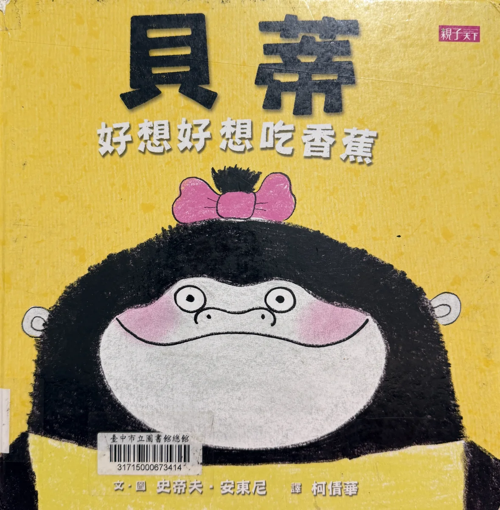
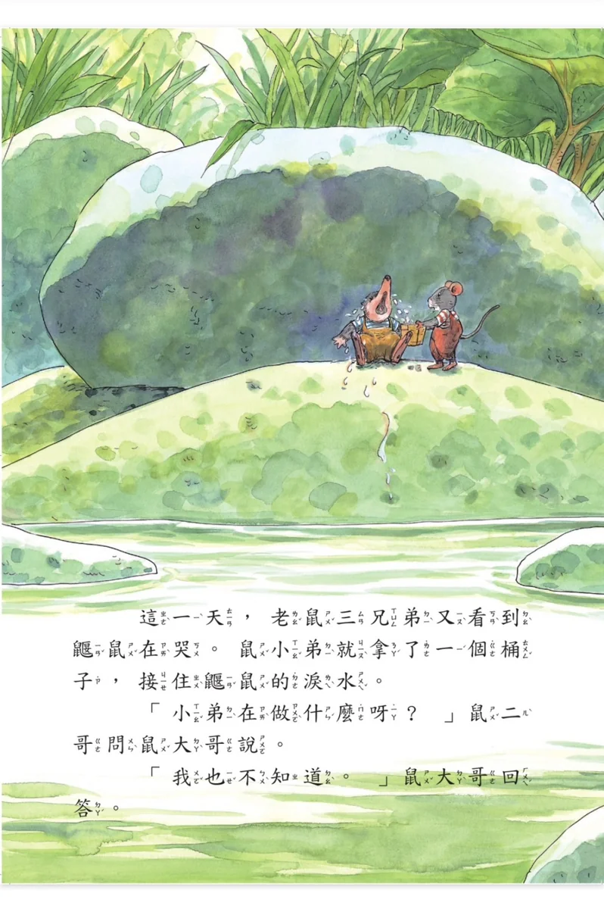
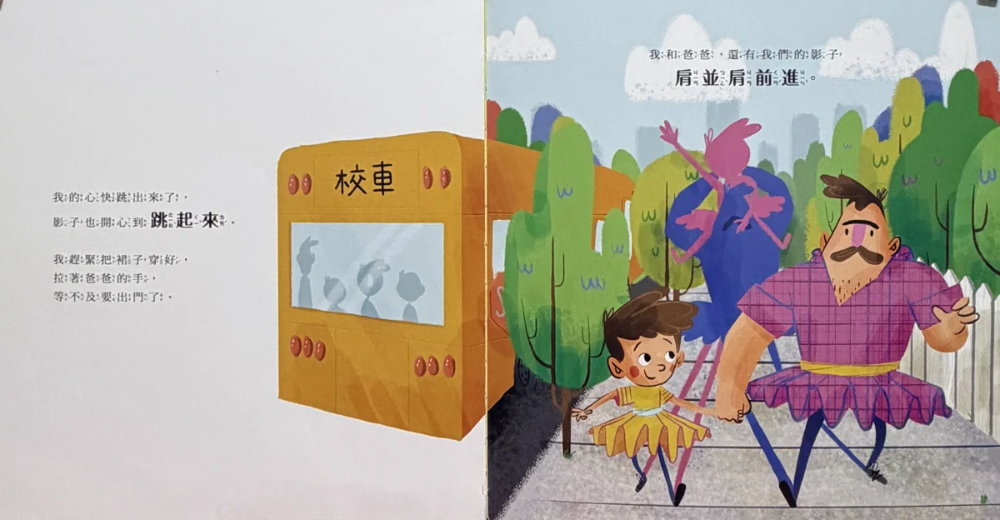
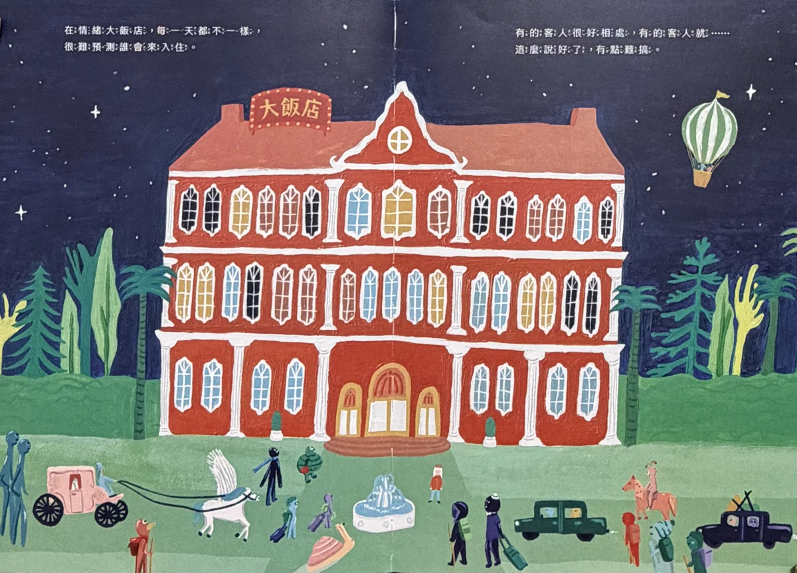
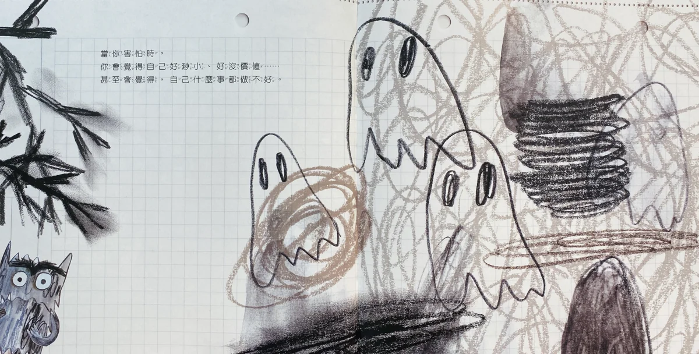
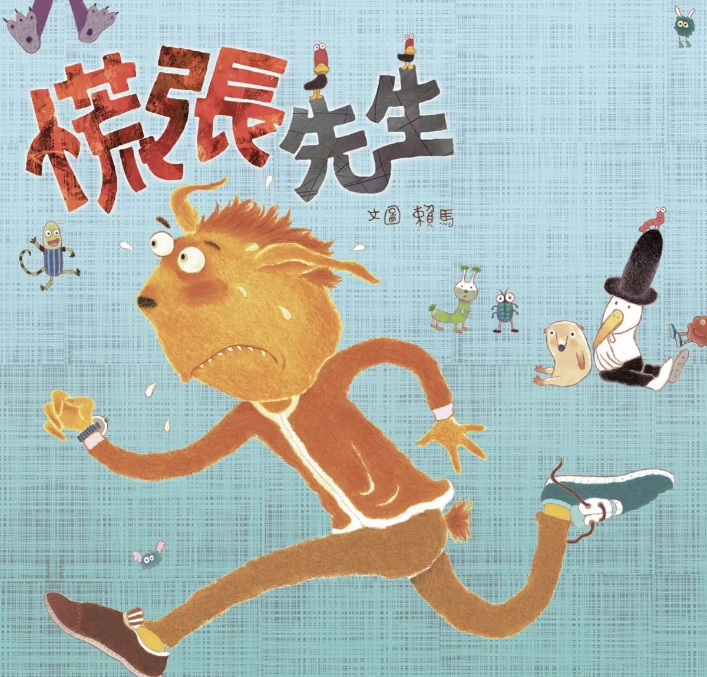

情緒覺察
察覺自己正在經歷什麼感受。
孩子每天都會遇見不同的情緒。有時候開心得不得了，有時候因為得不到想要的東西而生氣，也可能因為緊張、害怕或難過，卻不知道該怎麼說。
這一期，大綠地藝術選擇以「情緒」作為課程主題，透過繪本故事、角色觀察、生活討論與多元媒材創作，陪伴孩子一步一步認識自己的感受。
繪本裡的角色，可能正在經歷孩子熟悉的事情。
當故事中的大猩猩因為吃不到香蕉而生氣，孩子可以從旁觀察角色的感受，再慢慢連結到自己的生活。
我們不急著告訴孩子「不可以生氣」，也不要求孩子每次都要開心。
而是透過觀察、提問與討論，讓孩子理解每種情緒都有原因，也可以找到不同的表達方式。
察覺自己正在經歷什麼感受。
理解情緒可能與哪些生活事件有關。
透過語言、圖像、色彩、動作及材料，表達自己的想法。
從繪本角色與他人的角度，練習理解不同感受及回應方式。
從角色的故事出發，把生活裡的感受，變成自己的創作。
生氣、挫折與期待

當想要的東西得不到時，我們會有什麼感受？
孩子從大猩猩的故事中觀察表情、動作與情緒反應，透過藝術創作呈現自己對挫折的理解。
兒童班進一步探索：當孩子遇到挫折時，希望大人如何理解與回應？
快樂的來源與分享

什麼事情會讓自己快樂？我們又可以做什麼事情，讓別人感受到快樂？
從故事中的小老鼠出發，透過水彩、色彩重疊與角色創作，將生活中的快樂轉換成圖像。
自我認識、喜好與支持

每個人都有自己的喜好，也有心裡真正想做的事情。
孩子透過人物造型與影子創作，探索外在形象與內在想法，學習尊重自己與他人的不同選擇。
認識不同情緒與生活事件

如果每一種情緒都有一個房間，它們會住在哪裡？
幼兒班透過舞台與燈光表現快樂、害怕和難過等感受。
兒童班則以連續兩堂課，設計自己的情緒大飯店，將印象深刻的事件與感受安排在不同房間中。
情緒辨認與角色表達

孩子透過不同的顏色、造型與表情，設計自己的彩色怪獸。
幼兒班以紙張堆疊製作兩隻可以操作的怪獸玩偶，再透過角色扮演，練習說出感受與故事。
此主題僅安排幼兒班。
緊張、慌張與身體表達

慌張的時候，身體會出現什麼反應？
孩子透過觀察人物的奔跑姿勢、手腳動作及誇張表情，將抽象的慌張感轉換成具體畫面。
兒童班進一步學習人物動態張力、誇飾法與突破畫面邊界的構圖。
相同的繪本主題，會依照孩子的年齡與發展能力，設計不同深度的創作活動。
幼兒班重視生活經驗、感官探索、情緒辨認與基礎表達。
《彩色怪獸》僅安排幼兒班，以可操作的怪獸玩偶與角色扮演，練習說出感受。
兒童班增加事件思考、故事安排、不同立場的理解、人物動態及畫面構圖。
《情緒大飯店》以連續兩堂課，將生活事件與感受安排在不同房間中。